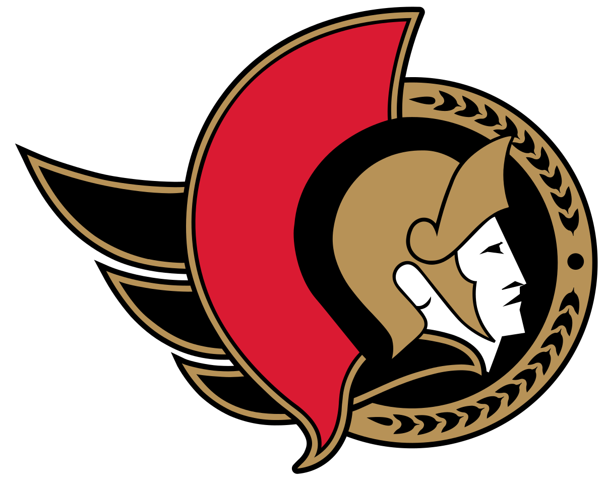
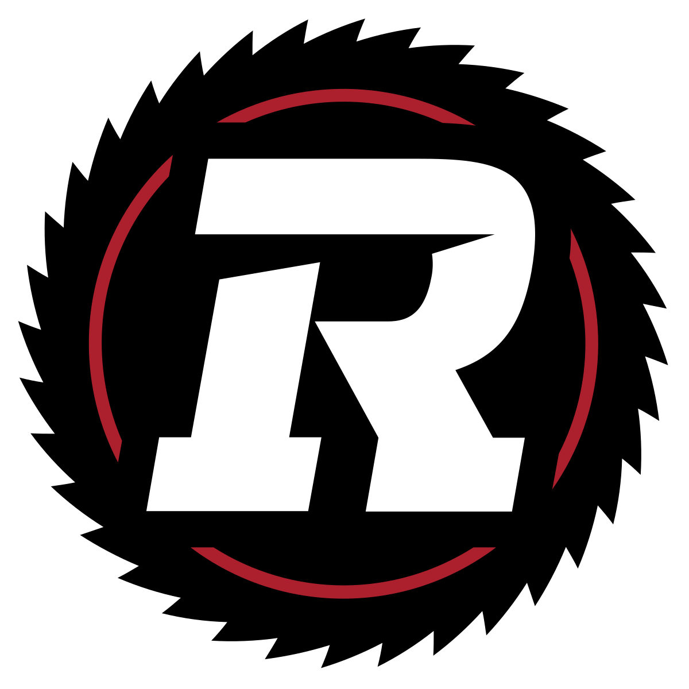
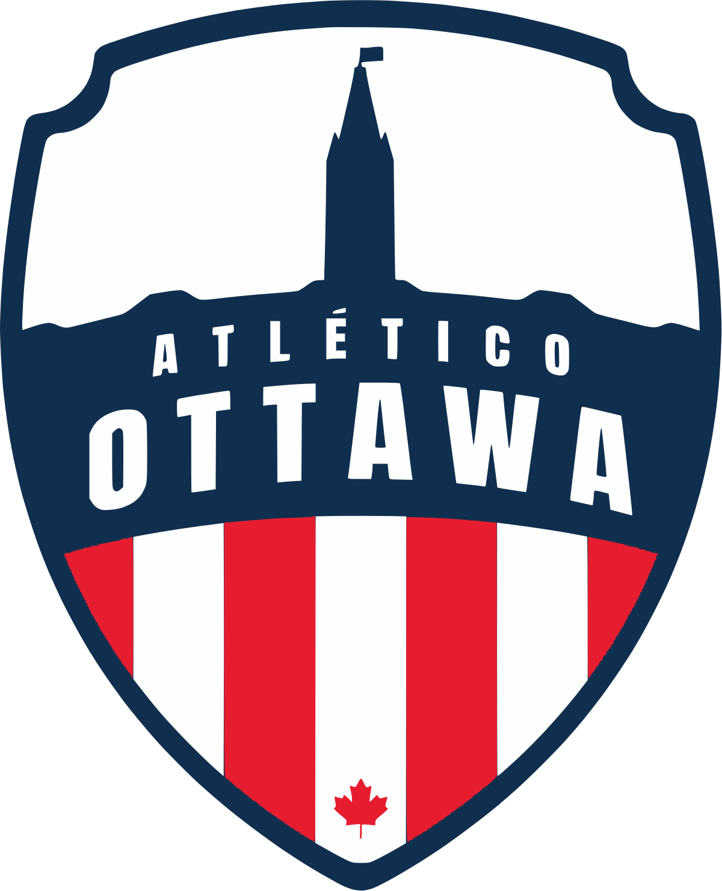
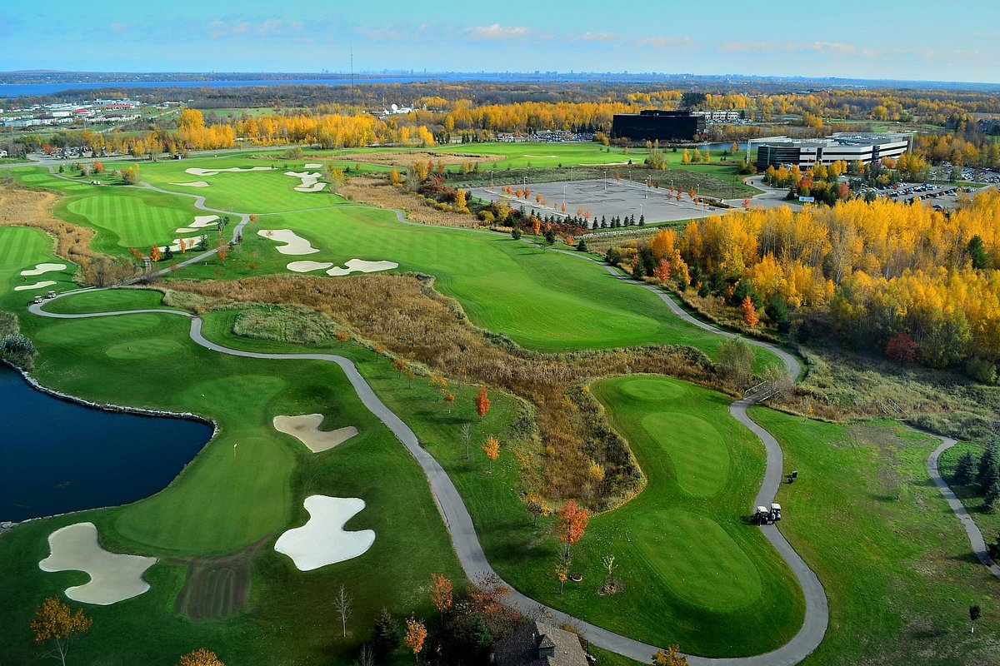
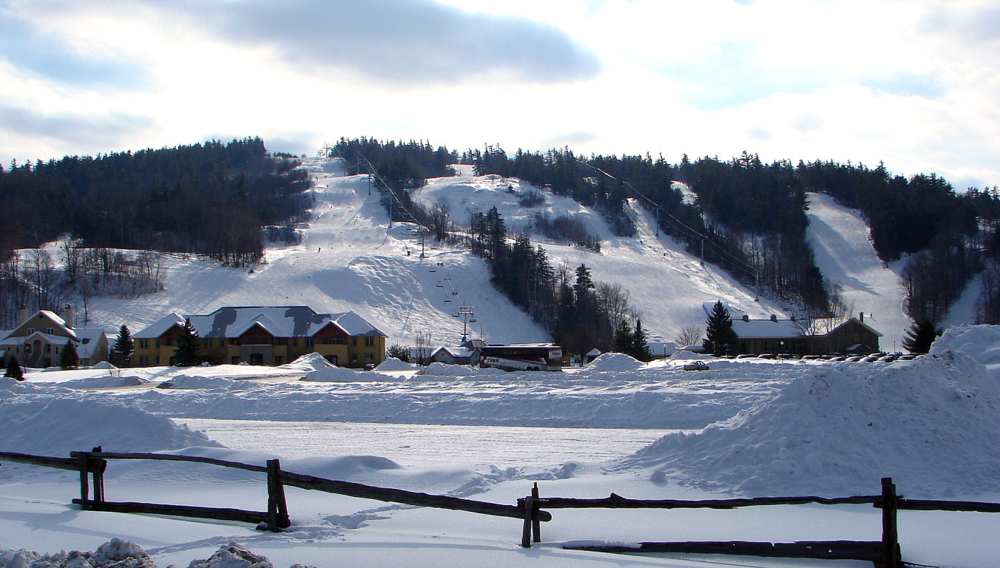

Map of Ottawa
Current Weather
Ottawa, Ontario
Professional Teams
Ottawa Senators - NHL Hockey

Season: October to April
Venue: Canadian Tire Centre
Website: Ottawa Senators
Twitter: @Senators
Ottawa RedBlacks - CFL Football

Season: June to November
Venue: TD Place Stadium
Website: Ottawa RedBlacks
Twitter: @RedBlacks
Atletico Ottawa - CPL Soccer

Season: March to October
Venue: TD Place Stadium
Website: Atletico Ottawa
Twitter: @AtletiOttawa
Recreational Activities
Golf

Eagle Creek Golf Club
Website: Eagle Creek Golf Club
Location: Dunrobin, Ontario (0.5hr drive from Ottawa)
The Marshes Golf Club
Website: The Marshes Golf Club
Location: Kanata, Ontario (0.25hr drive from Ottawa)
eQuinelle Golf Club
Website: eQuinelle Golf Club
Location: Kemptville, Ontario (0.75hr drive from Ottawa)
GreyHawk Golf Club
Website: GreyHawk Golf Club
Location: Navan, Ontario (0.5hr drive from Ottawa)
Website: Eagle Creek Golf Club
Location: Dunrobin, Ontario (0.5hr drive from Ottawa)
The Marshes Golf Club
Website: The Marshes Golf Club
Location: Kanata, Ontario (0.25hr drive from Ottawa)
eQuinelle Golf Club
Website: eQuinelle Golf Club
Location: Kemptville, Ontario (0.75hr drive from Ottawa)
GreyHawk Golf Club
Website: GreyHawk Golf Club
Location: Navan, Ontario (0.5hr drive from Ottawa)
Ski

Camp Fortune
Website: Camp Fortune
Location: Chelsea, Quebec (0.5hr drive from Ottawa)
Calabogie Peaks Resort
Website: Calabogie Peaks Resort
Location: Calabogie, Ontario (1hr drive from Ottawa)
Sommet Edelweiss
Website: Sommet Edelweiss
Location: Wakefield, Quebec (0.75hr drive from Ottawa)
Mont Ste-Marie
Website: Mont Ste-Marie
Location: Lac Sainte-Marie, Quebec (1.25hr drive from Ottawa)
Website: Camp Fortune
Location: Chelsea, Quebec (0.5hr drive from Ottawa)
Calabogie Peaks Resort
Website: Calabogie Peaks Resort
Location: Calabogie, Ontario (1hr drive from Ottawa)
Sommet Edelweiss
Website: Sommet Edelweiss
Location: Wakefield, Quebec (0.75hr drive from Ottawa)
Mont Ste-Marie
Website: Mont Ste-Marie
Location: Lac Sainte-Marie, Quebec (1.25hr drive from Ottawa)